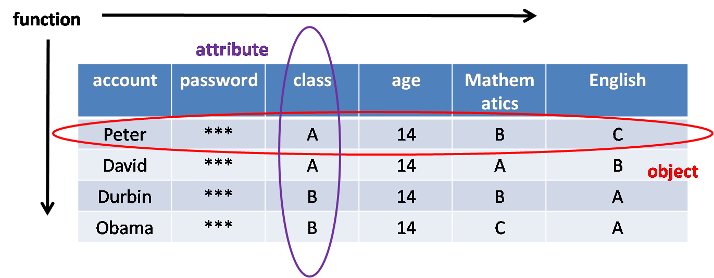

"The call to a service is ultimately done through a function," David said. "But functions need to bind data to determine the granularity of parallelism": Pitt argues. This morning David and Peter were in the garden arguing whether the structure of the software we developed was object-oriented or function-oriented? The question suddenly sounded very contradictory. It seems that the structure of software can only choose between object-oriented and function-oriented. But in fact, object-oriented and function-oriented are just a way of thinking in the development process. When you look at the development process from the user's perspective, it is object-oriented. Because the user operates on a small set of data. This collection is called an object. When you look at the server from a different perspective. The data of the server is operated by various user functions. The data of all functions constitutes the total data of the server. And the scope of each function is not fixed. It may operate on very small data, or it may operate on very large data. For example, changes to user status. Or statistical analysis of the data of several years. From the perspective of server, it is called function-oriented programming.
Object-oriented programming and function-oriented programming have the same long history. But early programming was mostly function-oriented. Because early computers were used for data analysis. It is a process of analyzing data and obtaining results. The same data set is used by different functions. In this period, function-oriented is also called process oriented. Each function has standard input, output, and processing. Input and output data are not the same, written on different paper tape. So don't worry about state errors caused by data changes. Later because of memory and hard disk. The goal of function input and output is unified into memory and hard disk. Not only should we consider whether there are errors in the process of function execution. Also consider whether the results of the input and output will lead to iterative errors. The so-called iterative error refers to whether repeated function execution will cause data errors in memory or hard disk. So it's called function-oriented programming at this time.
Object-oriented programming has been created for a long time. But because early computers were mainframe computers, they were used for large data processing. There is very little software developed for ordinary users. Not to mention user operations. It wasn't until the introduction of microcomputers that the situation changed. With the popularity of micro computing, a large number of applications for ordinary users began to appear. The characteristic of these applications is that the data range of each operation of users is small. There are not many intersections between data. Object-oriented language is very suitable for developing these applications. With the emergence of software for ordinary users. Object-oriented languages have also become popular. One of the most famous is C++. As an improved version of C language, it has both C language performance advantages and object-oriented syntax features. But both C and C + + have the obvious defect of pointer. There is no denying that pointer has incomparable advantages in performance. But easy to lead to collapse and difficult to understand are the disadvantages of the pointer. Pascal and later Java filled the gap of C++. With the popularity of the Internet in the 1990s, users began to manipulate the data on the server through web pages. Java, the object-oriented language used in the server, has replaced function-oriented C as the most widely used language.
The object-oriented language is applied to the scene directly controlled by users because it is close to users' habits. Function-oriented language is applied to data manipulation because of its flexible data usage. They are all a kind of development language, limited to a certain scope to achieve more focused functions. There are advantages and disadvantages. The advantage of object-oriented is that the data set is divided into several small blocks. It's easier to add new features. It has less impact on the existing parts. It is also suitable for large-scale multi person collaborative development. Its disadvantages are also very obvious, because the data is divided into several small pieces. It is very difficult to develop functions across data sets. It is more difficult to deal with when multiple subsets have multiple cross relationships. That's what we call cross object relationships. This relationship is very common in relational databases. For example, social interaction or transactions between users. Therefore, the processing of this relationship is usually done by a relational database or server.
Compared with object-oriented, function-oriented also has its advantages. The function-oriented method is suitable for the changeable data relations. When developing new functions, there are fewer restrictions on the use of data. Data can be used at various latitudes and time scales. But its flexibility also brings its disadvantages. It is possible to damage existing functions when adding new functions. Because there is no strict object-oriented protection. This kind of injury will not be easily found. In order to avoid causing imperceptible damage. Function-oriented development needs to be very careful. This makes it difficult to add and modify functionality. It is also difficult to improve efficiency through collaborative development. It is suitable for software with high speed requirements and small size.
Object-oriented and function-oriented can be simply understood as restrictions on the use of data by functions. In addition to these two ways, there is another way to use data in the form of key-value. Key-value database is a popular storage method in recent years. Its advantage is that it is very convenient to use data. It can be used as an object-oriented supplement. Is this key value perfect? Obviously not. For example, "class" in the figure will be stored in the form of "peter_class: a" in the key value database. Where "peter_class" is key and "a" is value. Then you need to pay an additional 20 keys for the above 20 value data. And all the data in the key-value database are scattered in a sequence. This leads to confusion in the index.
After discussing function-oriented, object-oriented and key value database. There is also a way, which has not been used before, is attribute-oriented. The attribute-oriented approach is used in Pelagia. This method takes into account the flexibility of "key value", and there is no confusion of naming methods. Similarly, "class" in the above figure is created as a table named "class" in Pelagia. In the table, you can create data with key as Peter and value as a. For example, in "set ('class', 'Peter', 'a')". The attribute-oriented approach also takes into account the need for object-oriented isolation of data. To some extent, it meets the function-oriented requirements. But on the storage, as the key-value, we need to waste part of the storage space for the key.
So Pelagia chooses the storage mode of attribute-oriented, another very important reason is. The data to be stored in Pelagia is needed for serial computing.
According to Amdahl 's theorem S=1/(1-a+a/n)
When n > 1, increase a to improve the acceleration ratio, where a is the proportion of parallel computing. To increase the proportion of parallel computing, it is necessary to reduce the proportion of serial computing. The way to reduce the serial operation is to divide the data as small as possible. Function-oriented regards all data as a whole. A whole is naturally inseparable. Although the object-oriented data is divided into small pieces, the data is sufficiently scattered. But the number of objects is infinite, and infinite data is equivalent to no segmentation. In the same way, key value is infinite and cannot be used as the support of data segmentation. Only the way of attribute-oriented can segment the data properly, and the segmentation effect will not be changed dramatically in the software running stage.
This article introduces process-oriented, function-oriented, object-oriented, key-value and attribute-oriented. They all describe the relationship between functions and data. Pelagia adds latitude of parallel computing to these relationships. The attribute-oriented method was chosen because of parallel computing. So Pelagia is neither function-oriented nor object-oriented. It's for attribute-oriented.